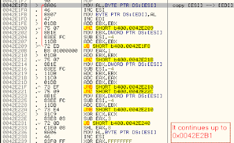

Defcon 19 (2011) - BINARY L33tness 400 - Writeup
Preliminary analysis
This is a Windows 32bit PE binary file. It shows the string "hello world" inside a shell and it exits.
| b400 output |
It is packed: PEiD reports: tElock 0.98b1 -> tE!
If you open it with Ollydbg, it will say you that b400 executable is packed. This message can be quite annoying, if you wish you can patch Ollydbg itself to skip it :-)
Configuring Ollydbg
When you run it inside Ollydbg, a lot of different errors appear. You can ignore them all:
Debugging options --> Exceptions --> "Ignore also the following exceptions or ranges" --> add 00000000-FFFFFFFF range. Set also: "Ignore memory access violations in KERNEL32" and unset all other options.
If you press F9 you will get a message "Don't know how to bypass...", you can skip it by pressing Shift+F9.
Since this program is heavily packed (probably twice), it is useful to have a breakpoint inside VirtualAlloc API, in order to track memory region creations. You can put it here:
| When this breakpoint is hit, in EAX you can see the base address of the memory region allocated |
If you try to change b400 memory or to place a hardware breakpoint, you will get the following error message:
| A hardware breakpoint (or a memory modification) has been detected! |
This is not a big deal since this check is done only before the first call to VirtualAlloc API, just remember that, when you need to place a hardware breakpoint, you have to do it after that VirtualAlloc has been called at least one time.
Finding original executable file
You can try to find the original executable file in memory. Run the program, when it terminates you can still search inside its memory for the string "hello world". You will find it in three different locations. The "hello world" string at 0x00415000 is the most interesting since it is located inside b400 memory. It is dinamically decrypted (in fact, when b400 is going to start, memory at 0x00415000 is filled with zeros).
You can understand when it is generated by placing a hardware breakpoint on write on 0x00415000 (Remember: hardware breakpoints can be set only after that VirtualAlloc has been called once).
This breakpoint is hit twice. The first time some zeros are written, the second time the "hello world" string is written from instruction at: 0x0042E1FB.
Single stepping at this location you can easily identify a decryption function. The code is extremely complex, however you only need to know that:
Most of the time data are copied from [ESI] to [EDI] one byte at a time.
Under "some circumstances" data written to [EDI] are retrieved in different ways
For instance, "hello world" is copied from "he? world" (where ?=0x11), 0x11 character is substituted with "llo" string copied from "FlsAlloc" string at 0x40D6EC :-)
If you wish, you can dump code from 0x0042E1F8 to 0x0042E2B1 and try to analyze it with IDA Pro, but this is not necessary at all.
|  |
| The decryption function |
It is useful to understand the range of data copied by this function. You can place a conditional log on 0x0042E1FB and log the value of EDI. You cannot place this breakpoint when the program starts, because the code of this decryption function is written during the execution of b400. So, place a hardware breakpoint on execution on 0x0042E1FB and when it is hit, place the conditional log on 0x0042E1FB.
What you will get is a log of memory locations written by the decryption function. It is not 100% complete because, as I said before, not all the data are copied with the MOV BYTE PTR DS:[EDI],AL instruction. However, you can see that this function writes memory from 0x00401000 to 0x0042DDCA.
You can change the conditional log settings, in order to make it stop the program execution when EDI==0x0042DDCA, in this way you can see that, when this function finishes, the following code is executed:
| Going to Original Entry Point... |
Then:
IAT is rebuild
Memory access is reset (this is an anti-unpacking technique)
The execution jumps to the Original Entry Point at 0x00401560
At 0x00401560 we have the OEP.
 |
| The Original Entry Point |
If you wish, now you can dump the process (using LordPE) and fix the IAT (using ImpREC, OEP RVA=0x1560, IAT RVA=0xC000, IAT size=0xF7C). If you do so, you will get a valid PE file. (But it will crash, because some values are read from memory allocated by the packer, I don't know why... ).
Once you have a valid PE file, you can load it in IDA Pro. IDA will correctly understands that code at 0x00401000 is the real "main" of this program.
| IDA Pro analysis of the "main" |
And now?
We have the unpacked binary, we know where it is decrypted (but it seems that no key is used by the decryption function), so where is the key?
Now you can lose hours reversing other decryption functions or the fprintf function (as I did), but it is useless. :-)
The decryption function writes data up to 0x0042DDCA, so, let's see the memory at this location.
| There is a PE header! |
There is a PE header, if you want, you can see it using Ollydbg integrated PE header parser (you need to paste it inside a full PE header). This PE header is coherent (OEP, IAT, and IAT size) with the original executable we have found, so it is the original PE header of it.
Let's see if there are other PE headers (you can search for "PE" string).
At 0x00432046 there is another PE header, section names are: "ddtek", "rules", "rsrc" :-)
In my opinion, this means that the original executable file has been packed (at least) twice and this is the PE header of the intermediate step. According to this PE header OEP=0x00426000, IAT RVA=0x30014, IAT size=0x8F. If you want to analyze this intermediate step, you can place an hardware breakpoint on execution on 0x00426000
Searching for "PE" string you will find also this string (in the middle of hundreds of API names):
HowCanThisPossiblyBeAValidPEFile?
which is the solution!
How I was suppose to know that?
Solving this challenge can be very simple. You just need to run the program until it terminates, dump the memory and search the "PE" string inside the dump. (There is also an online tool that unpacks an executable file and extracts all the strings it founds [http://eureka.cyber-ta.org])
The problem is: how to know which is the string to look for?
Maybe you can notice that all APIs name are in reverse alphabetical order, except for the "HowCanThisPossiblyBeAValidPEFile?" string.
Another possibility is to realize that the program makes a lot of modifications inside PE header and it hides them from memory breakpoints using VirtualProtect API.
| b400 is removing memory breakpoints from PE header using VirtualProtect API. |
So you can understand that PE headers are, in some way, important for solving this challenge and you can have the idea of searching for the "PE" string.